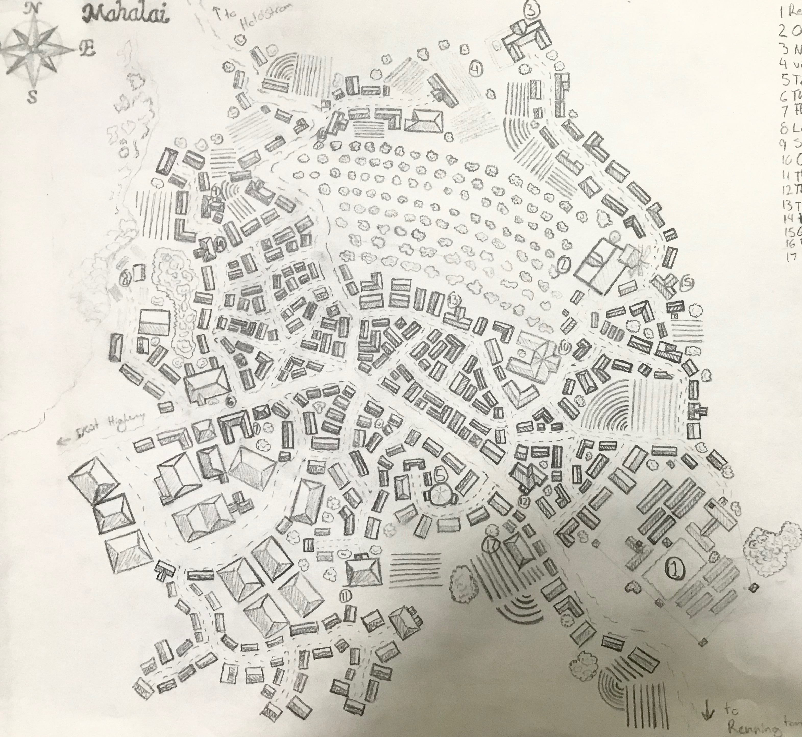

Umbrifiath Dolosor
A little bit about me. MY name is Ryan, I live in the midsouth US. I currently work as a Production Manager at a banner and sign shop.
Bulbous Roses
I have a LOT of hobbies, I mean like collecting hobbies is my hobby. The hobbies that have stuck around for more than a month or two however are playing table top role plaing games, and collecing, sculpting, and painting miniatures. (mostly for said tabletop RPGs)
- Lions
- Tigers
- Bears
I have been married for almost four years, and have two beatuiful kids. They are my primary motivation for changing careers. I want a better finacial stuation to give them the best life I can. Also why I chose Atomic over other plans,I needed a learning path that left me plenty of time with my family.
- Tiered
- Hungry
- Coding

Dinner is ready!
Hmmmm what else. Well since we are on the subject of dinner my favorite food is probably sushi, specifically eel sushi.
- Xonis, Human Conjuration Wizard
- Oskar, Duragar forge Cleric
- Val'haia, Blood-Elf grave Cleric
- Kephius, Human Samurai Fighter

Look at the thing.
Oh, i just read the next point I guess all of these sections will have an image. I made all of these images. Huge Halo fan.
- JRR Tolkien
- CS Luis
- Elizabeth Moon
Ah yes, I remeber!
LAst thing about me... Hmmm... I am a creator, It is in my blood, it is what I love doing. I usually don't care what I am creating as long as I am creating. Imuch prefer creatio to consumption, though Netflix may have some differing oppinions on that, hmm...
- Starwars
- Halo
- LOTR
- Critical Role
.png)
- A New Career
- Back end programming
- Database basics
- Making actual projects in a structured environment.
- The schedule flexibility to learn and still spend time with my family.
- Minecraft is my favorite videogame.
- In highschool I wanted to be a fashion designer.
- Dungeons and Dragons is my favorite RPG.
- I love medieval armor and have dabbled in armorsmithing.
- I am trying not to reveal too much PII in this assignment.